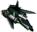
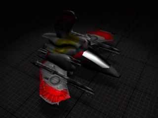

Crusader


In-game info panel
- Speed:
- 1846 km/h
- Energy (HP):
- 450
- Sight range:
- 600 m
- Production time:
- 51 s
| Weapon | Power | Range | Targets |
|---|---|---|---|
| Ion Gun | 48 | 1-10 | G |
| Humming-bird Rocket | 125 | 2-10 | A |
Costs: Extract 1800 Iron 2000 Carbon 1400 Titanium 1800
Description
This multi-purpose fighter is the Templarius' successor. Characterised above all by amazing speed and efficiency. Equipped with two integrated ion guns and Hummingbird class rockets. Can not only engage air targets, but also provide support for attacking ground units. Thanks to its manoeuvrability, it often avoids anti-aircraft fire. The Templarius is a fully modernised, but expensive unit.
Related
- Requires
- Pioneer, Mega Factory, Crusader
- Researched by project
- Crusader
- Produced by
- Mega Factory
- Weapons
- Ion Gun (slot 0), Humming-bird Rocket (slot 1)
- Upgraded by
- Burst Engine, Super-stealth System
Config values not shown in game (7)
HUMAN- 1
AILEVEL- 1
TURN_SPEED- 0.0052
AIUNIT- AIUNIT_FIGHTER
SOLDIER_TYPE- SOLDIERTYPE_UNKNOWN
INDEPENDENT- nigdy
TYPE- R_hSAMOLOT